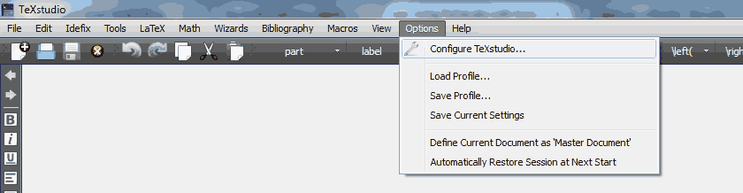
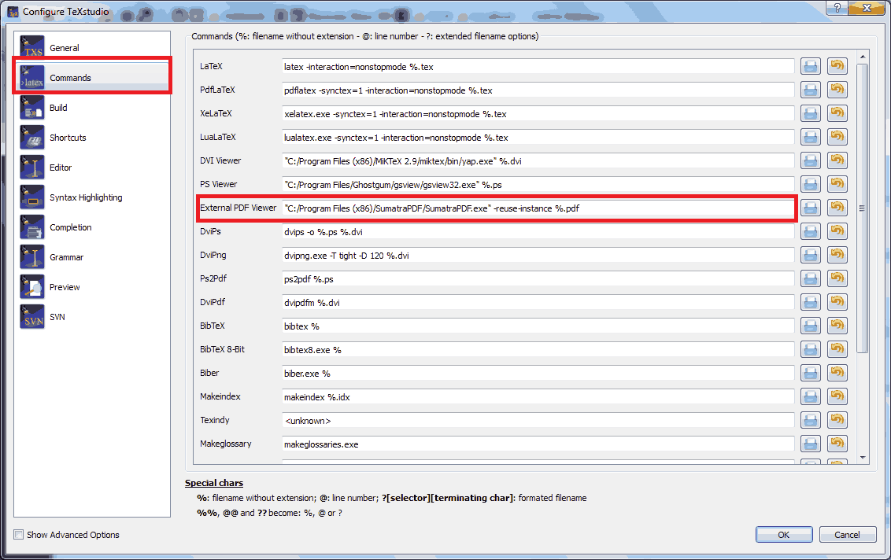
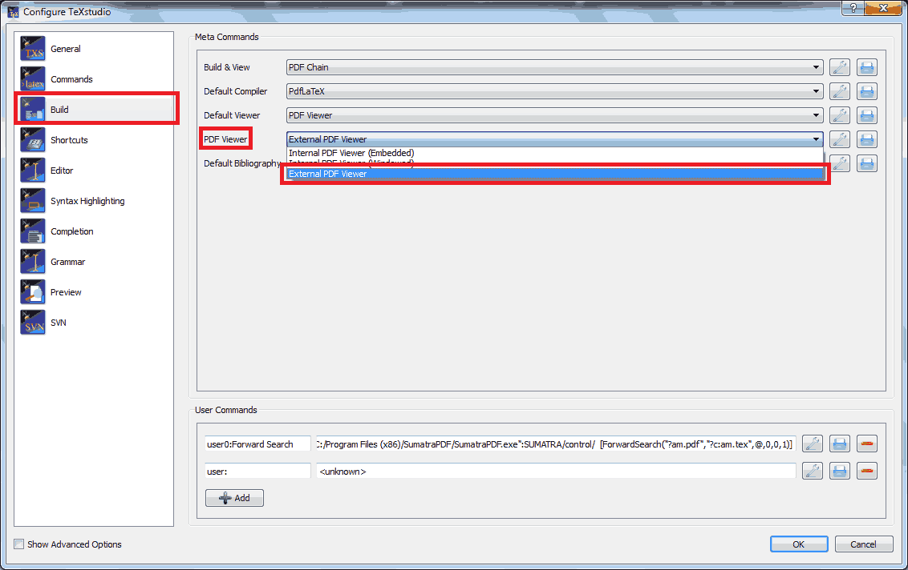
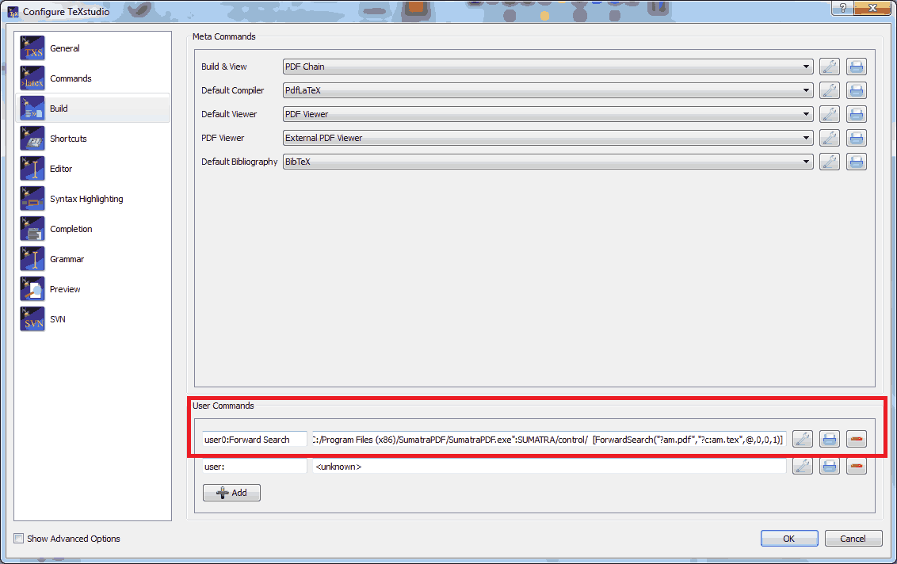
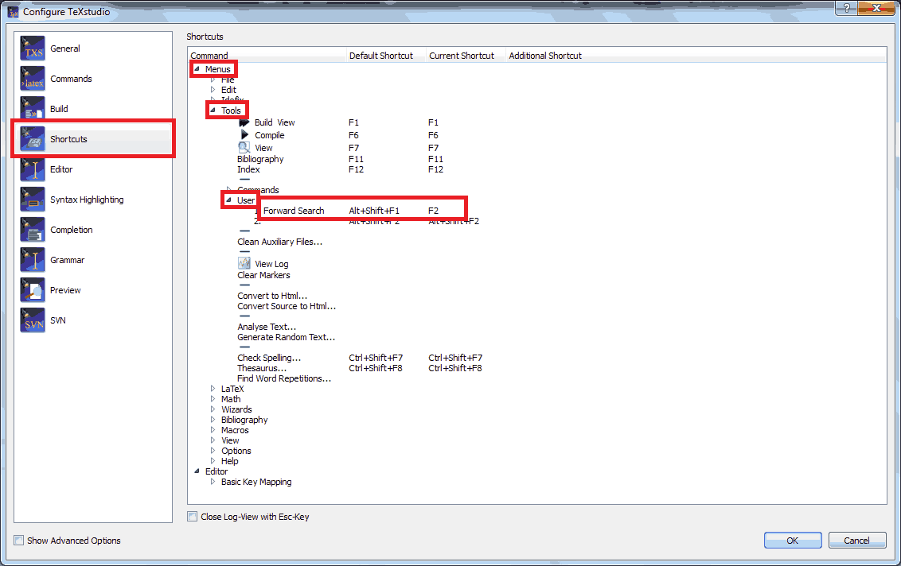
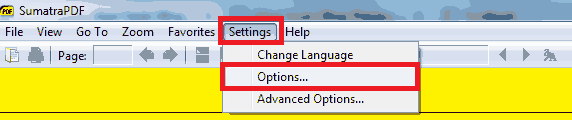
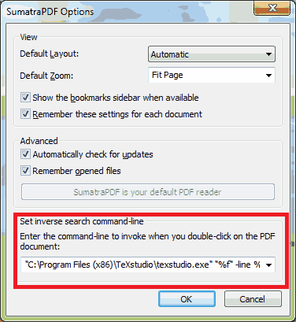

Create Search Link Between TeXstudio and SumatraPDF (215-2-19969727)
I use TeXstudio for my LaTeX works. SumatraPDF is also good, lightweight PDF reader. It is possible to create a forward search from TeXstudio to SumatraPDF. You may find PDF output of a LaTeX code. Similarly, a backward search is possible: find LaTeX source code from PDF output.
Given steps are tested by using TeXstudio 2.10.8 and SumatraPDF v3.1.1 64-bit on a Windows 7 64-bit machine. However, I am pretty sure it will work for almost all possible future and previous versions.
Info
This post will be based on this article But since it was published in 2011, there are some slight changes in software menus. You may also read it.
1- Open TexStudio. Navigate Options → Configure TeXstutdio…

Configure TeXstudio…
2- Click Commands tab, and find External PDF Viewer option.

External PDF Viewer…
3- Change the field with:
"C:/Program Files (x86)/SumatraPDF/SumatraPDF.exe" -reuse-instance %.pdf
You should put your path to SumatraPDF.exe between quotation marks.
Info
Update (08 Feb 2015): I use pdflatex. According to Vojtech Vozda (see comments), if you use DVI → PS → PDF chain you should also add -synctex=1 option to LaTeX part as in PdfLaTeX option in order to create search link between your source code and PDF file. See also: What exactly is SyncTeX?
4- Click Build tab, find PDF Viewer option and change it to External PDF Viewer.

Use External PDF Viewer
5- On the same windows, locate User Commands tab.

User Commands
Add the following statements:
user0:Forward Search
to the first column and
dde:///"C:/Program Files (x86)/SumatraPDF/SumatraPDF.exe":SUMATRA/control/ [ForwardSearch("?am.pdf","?c:am.tex",@,0,0,1)]
You should put your path to SumatraPDF.exe between quotation marks.
Click OK
6- Now let’s open Options → Configure TeXstutdio… again and select Shortcuts tab. Expand Menus → Tools → User tree. Now you should see a user command called Forward Search. Now its default shortcut is Alt+Shift+F1. But you can also assign another shortcut to forward search like F2. But this step is optional.

User Commands Shortcut
7- Now we are done with TeXstudio. Let’s set up SumatraPDF. Open SumatraPDF. Click Settings → Options.

Sumatra Settings
8- Locate Set inverse search command-line.
Info
Update (19 Feb 2016): 8.a is added.
8.a- If you don’t see “Set inverse search command-line” option and options window is ended by “SumatraPDF is your default PDF reader” button, first do this step.
Run the following command. (Windows Start → Search for cmd.exe → Open cmd.exe → Paste the following code → Press Enter)
"C:/Program Files (x86)/SumatraPDF/SumatraPDF.exe" -inverse-search
You should put your path to SumatraPDF.exe between quotation marks.
This command will open SumatraPDF but it will give a loading error. This isn’t important. Now open options again and you should see the inverse search option as given below.

Sumatra Inverse Search
Type:
"C:\Program Files (x86)\TeXstudio\texstudio.exe" "%f" -line %l
You should put your path to SumatraPDF.exe between quotation marks.
Click OK and exit.
Now let’s try your new setup.
Compile a LaTeX code in TeXstudio and produce PDF output. If you press F2 (if you assign that shortcut in TeXstudio settings), SumatraPDF should highlight corresponding output of your cursor position. In SumatraPDF, double-clicking shows corresponding LaTeX code in TeXstudio.